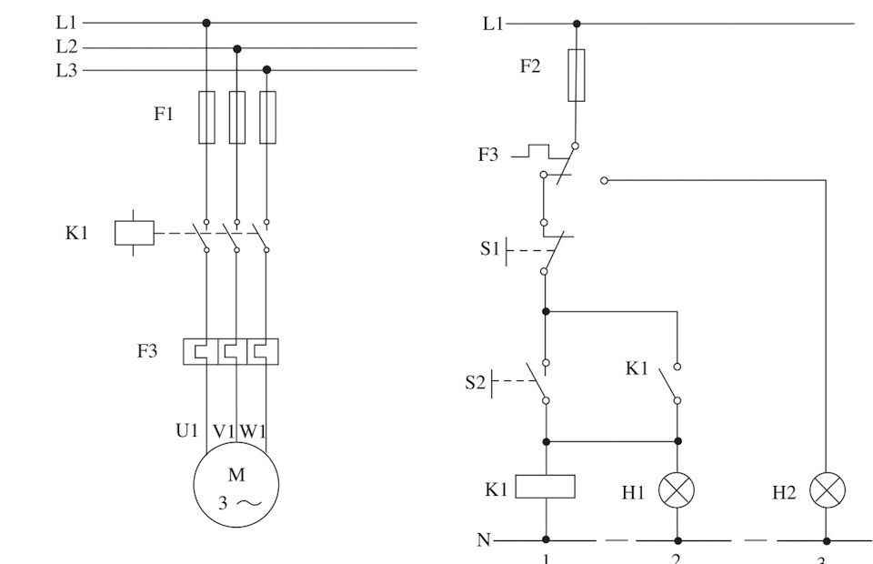

วงจรเริ่มเดินมอเตอร์โดยตรง (direct-on-line, DOL) วงจรเดียวเขียนได้หลายแบบ แต่ละแบบเขียนให้คนต่างกลุ่มอ่าน: วิศวกรดูภาพรวมจากแบบเส้นเดียว ช่างดูว่าวงจรทำงานอย่างไรจากวงจรกำลังและวงจรควบคุม และคนประกอบตู้ต่อสายตามแบบสายไฟ หน้านี้ใช้วงจรเดียวกันทั้งหน้า และชี้องค์ประกอบที่แบบตามมาตรฐานต้องมี: ชื่ออุปกรณ์ เลขขั้ว เลขทางเดินกระแส เลขสาย และตารางอ้างอิงหน้าสัมผัส
One direct-on-line (DOL) starter can be drawn in several ways, each for a different reader: the engineer sees the overview in the single-line diagram, the electrician sees how it works in the power and control circuits, and the panel builder wires it from the wiring diagram. This page uses one circuit throughout and points out what a drawing to the standard must carry: device names, terminal numbers, current-path numbers, wire numbers and the contact cross-reference.
รูป 1.2 ในตำราเป็นวงจรเริ่มเดินโดยตรงที่ถูกต้องตามหลักการ ด้านซ้ายคือวงจรกำลัง (ฟิวส์ F1, คอนแทกเตอร์ K1, โอเวอร์โหลด F3, มอเตอร์) ด้านขวาคือวงจรควบคุม (ฟิวส์ F2, หน้าสัมผัสโอเวอร์โหลด F3, ปุ่มหยุด S1, ปุ่มเริ่ม S2, หน้าสัมผัสค้างตัวเอง K1, หลอด H1 และ H2)
แบบตามมาตรฐานที่ใช้ในวิชานี้ต้องมีเพิ่ม: เลขขั้วทุกจุด ตารางอ้างอิงหน้าสัมผัสใต้คอยล์ และ เลขสาย และใช้รหัสของวิชา ส่วน B ด้านล่างวาดวงจรเดียวกันใหม่ให้ครบ: Q1 เบรกเกอร์หลัก, F1 ฟิวส์วงจรควบคุม, F2 โอเวอร์โหลด, KM1 คอนแทกเตอร์
Fig. 1.2 of the textbook is a correct direct-on-line starter. On the left is the power circuit (fuses F1, contactor K1, overload F3, motor), on the right the control circuit (fuse F2, overload contact F3, stop button S1, start button S2, holding contact K1, lamps H1 and H2).
A drawing to the standard used in this course also carries terminal numbers everywhere, a contact cross-reference under the coil and wire numbers, and uses the course codes. Section B below redraws the same circuit in full: Q1 main breaker, F1 control fuse, F2 overload, KM1 contactor.

สาย 3 เส้นวาดรวมเป็นเส้นเดียว ขีดเฉียง 3 ขีด (หรือขีดเดียวกับเลข 3) บอกจำนวนตัวนำ อุปกรณ์วาดเป็นขั้วเดียว แบบนี้ใช้ในแบบระบบไฟฟ้าของอาคารและแบบตู้ที่มีมอเตอร์หลายตัว เพราะเห็นทั้งระบบในหน้าเดียว แต่ไม่บอกว่าวงจรควบคุมทำงานอย่างไร
The three wires are drawn as one line; three strokes (or one stroke with a 3) give the number of conductors, and each device is drawn as one pole. Building single-line diagrams and panels with many motors use it because the whole system fits on one page, but it says nothing about how the control works.
กดปุ่ม S2 (กดค้างแล้วปล่อย) ในภาพหรือที่ปุ่มบนประตูตู้ควบคุมด้านล่าง: คอยล์ KM1 มีไฟ หน้าสัมผัสหลักในวงจรกำลังต่อ มอเตอร์หมุน และหน้าสัมผัส 13–14 ค้างวงจรไว้หลังปล่อยปุ่ม เส้นประเคลื่อนที่คือทางที่กระแสไหล (สีแดงฝั่งแหล่งจ่าย สีฟ้าฝั่งนิวทรัล) หลอดสัญญาณบนประตูตู้ติดตามวงจร: H1 สีเขียวเมื่อมอเตอร์เดิน H2 สีเหลืองอำพันเมื่อโอเวอร์โหลดตัด ลองกด S1 หยุด และคลิกโอเวอร์โหลด F2 ให้ตัด ดูตัวเลขใต้วงจร: เลขทางเดินกระแส 1–4 และตารางอ้างอิงใต้คอยล์ KM1
Press S2 (hold, then release) in the picture or on the panel door below it: coil KM1 is energised, the main contacts close in the power circuit, the motor turns, and contact 13–14 holds the circuit after you let go. Moving dashes show where current flows (red on the supply side, blue on the neutral side). The pilot lamps on the door follow the circuit: H1 glows green while the motor runs, H2 amber when the overload has tripped. Press S1 to stop, and click overload F2 to trip it. Look under the circuit: current-path numbers 1–4 and the cross-reference under coil KM1.
เปิด "แสดงเลขสาย" ในส่วน B: ทุกจุดที่ต่อถึงกันด้วยสายโดยไม่ผ่านอุปกรณ์มีศักย์ไฟฟ้าเดียวกัน จึงได้เลขเดียวกัน ฝั่งนิวทรัลเขียนว่า N แล้วช่างจะสวมปลอกเลขสายที่ปลายสายทุกเส้น เมื่อเกิดปัญหา ช่างวัดไฟตามเลขสายได้ทันทีโดยไม่ต้องไล่สาย
ตารางด้านขวาคือรายการเดินสาย (connection list) ที่ได้จากเลขสาย ปุ่มกดและหลอดที่อยู่บนฝาตู้ต่อผ่านแผงขั้วต่อ X1 บทที่ 5 จะเขียนแบบสายไฟเต็มจากรายการนี้
Turn on "Show wire numbers" in section B: points joined by wire alone, with no device between them, are at the same potential and get the same number; the neutral side is marked N. A ferrule with the number goes on every wire end, so when something fails the electrician measures by wire number without tracing wires.
The table on the right is the connection list made from the wire numbers. The buttons and lamps on the panel door connect through terminal strip X1. Chapter 5 draws the full wiring diagram from such a list.